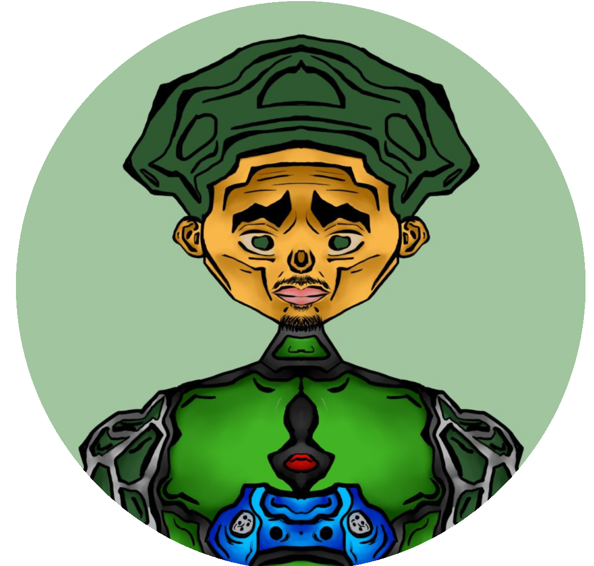

About Get Focused photographer
I, Craig Owen at get focused photography am a professional, result driven photographer with more than 20 years experiance in the industry. It is my goal to build solid long term relationships with my clients through excellent quality and service delivery. Over the years I've had my focus areas have included corporate events, weddings, products, personal photoshoots, and much more. Each one of these shoots have been approached with creativity, precision, hospitality, and a commitment to bringing my clients vision to life. This is more than just taking pictures, its about capturing stroies and preserving memories with creative visuals which leave a lasting impression. At Get Focused, we strive to combine the technical expertise with artistic expression to deliver images that truly stand out.
Wedding Photography
Capturing the most precious moments of your big day with elegance and emotion.
Read More